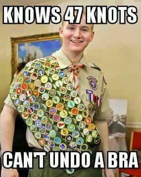
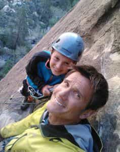

Back in the 1970s, my big brother was a cub scout and our mom was den leader. We put paper bags on our heads and beat each other with rolled up newspapers and went to the state capitol in Salem but that is about all I remember. Never once did I think, “How can my mom teach boys to be men?” The scouts have rapidly changed for the worse since then.
My experiences hiking near scouts
At sixteen years old, after a lifetime of my super dad teaching my brother and I to hunt, fish, shoot, fight, hike and swim, I took a seven-day hike alone in the Alpine Lakes Wilderness prior to my senior year in high school.
There, one afternoon, as I set down my lightweight, streamlined pack to set up my small tent, a scout troop of pudgy kids my age showed up. The entire twenty-boy group showed up in a delicate pristine alpine lake meadow and dutifully began attacking every tree in sight with the hatchets they had carried in their clunky, falling apart ancient-ass backpacks.
After thoroughly destroying the meadow full of trees that took a hundred years to grow ten feet tall in order to build a bundle of sticks they called a “raft,” they all tried to light the remaining trees they had cut down on fire to cook the cans of beans they had brought.
Since I had been hiking alone for a week I hung out with them and learned that they were all Mormon boys from the same “ward.” The ones who could swim jumped off some cliffs with me into the lake. One ran off because there was a bee chasing him (recall that we were all about sixteen). Out of the twenty, maybe two were interesting.
All of them had no idea how I was hiking the Alpine Lakes Wilderness at sixteen alone for seven days. Their minds were blown. Most hoped that, someday, their moms might allow them to camp alone overnight someplace near their homes. Most had never killed anything larger than a fish and, though all had dozens of merit badges, not a single one had any practical outdoor skills.
As night came so did an amazing thunderstorm. As I enjoyed it in the comfort of my tent, two of the boys who thought it would be cool to “sleep under the stars” came to my tent asking for shelter. I let them in because I wasn’t an asshole yet back then. A moment later their leader came and took them back to his tent because they weren’t allowed to share tents with strangers. No doubt those boys learned a lot that night.
I hike and climb a lot and the scene I just played out, in one form or another, repeats itself everywhere I go. Fat leaders hiking with shitty, Walmart gear lead equally clueless kids with full garbage bags over their shoulders, miserable and breathless after three flat miles on easy trails. They camp in groups larger than the sites can support and proceed to trash the place, leaving shit everywhere.
The new and improved boy scouts
Welcome to scouting in the 21st century. A white-knight factory of political correctness where odd-ball omega boys are sent by their uninvolved parents to learn “scouty things.” If the boys are lucky they will get trained by a merit badge counselor who learned the task they are teaching from YouTube the previous week using the most outdated methods and gear possible. This five-minute exposure to a task earns them a little patch for their sash.

It wasn’t always like that. At one time, scouting represented traditional American values of dignity and honor, so the left decided it must die. They won. Not only are your boys being taught by the nice old man down the street who just so happens to have a lot of extra boy-sized backpacks (child molester?), but today’s boy scouts can also be mentally ill girls who think they are boys or they can be gay boys who want to touch other boys’ naughty parts.
“Daddy, why don’t we do scouts?”
Once, one of my five kids asked why we didn’t do scouting and I said it would interfere too much with our mountaineering, hiking, hunting, and fishing trips.
My kids and I have climbed the highest volcanoes in the Pacific Northwest, skied down them, caught salmon, killed deer, ducks and pheasants and at eleven they begin belaying each other as we rock climb. We built our damn tree house together and they all received their own pocket knives at age eight. My boys can fold an American Flag and my girls cook better than most twenty somethings. The LAST thing my kids need is some pansy, milksop chi-mo scout leader teaching them to become the fat kid from the movie UP.
Most of my acquaintances who have odd-ball, nerdy kids send them to Boy Scouts meetings (after karate practice, we’ll talk about THAT joke another day) where they learn things like how to tie a sheepshank (a knot that can get you killed) or how to start a fire using anything and everything EXCEPT the way we all do it with—a $0.99 Bic lighter.

Craig knows how masculine men father their boys and he is missing a leg. What is your excuse?
A sampling of what scouting has become can be seen in their rule books: “Water guns and rubber band guns must only be used to shoot at targets, and eye protection must be worn.” And, “For water balloons, use small, biodegradable balloons, and fill them no larger than a ping pong ball.” We used to beat kids up who said faggoty shit like that.
Conclusion
If I could design a factory to produce beta losers, I could do no better than the Boy Scouts of America. So if you need babysitting once a month and you are worried that your son isn’t becoming enough of a mamma’s boy you can send him to scout meetings and sleep peacefully knowing he will never see female genitalia without supplying his credit card number first.
Read More: 15 Ways Masculine Schools Can Turn Boys Into Men